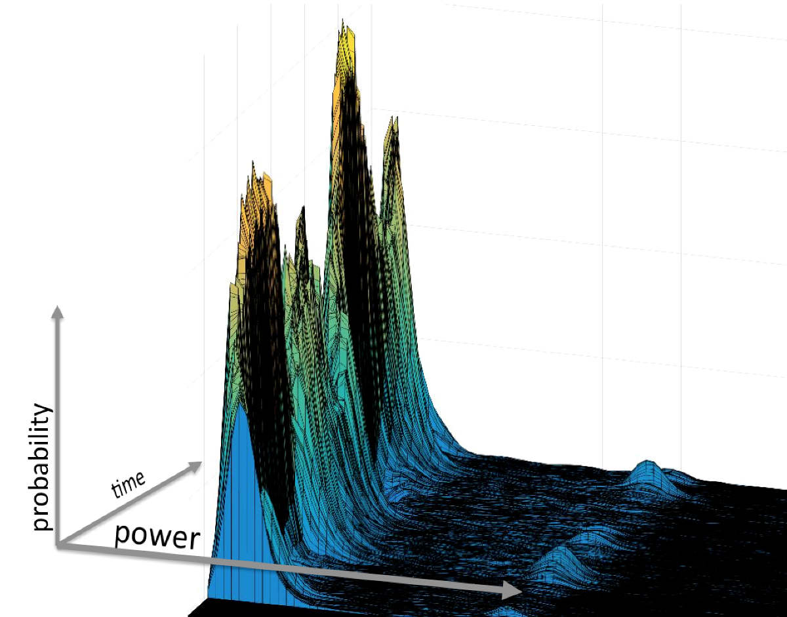
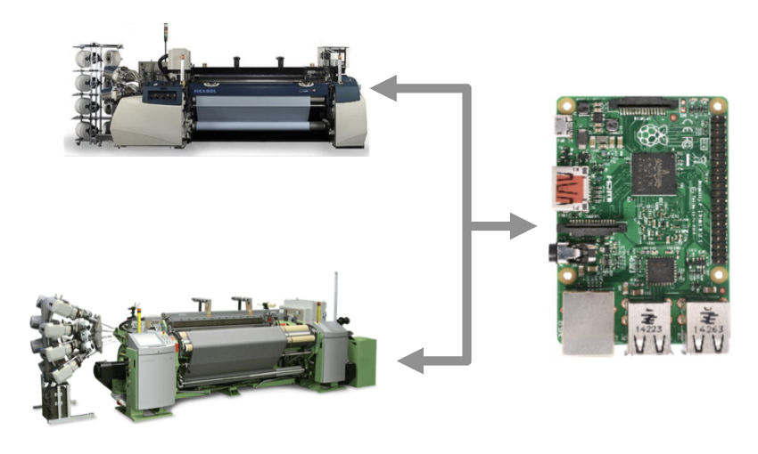
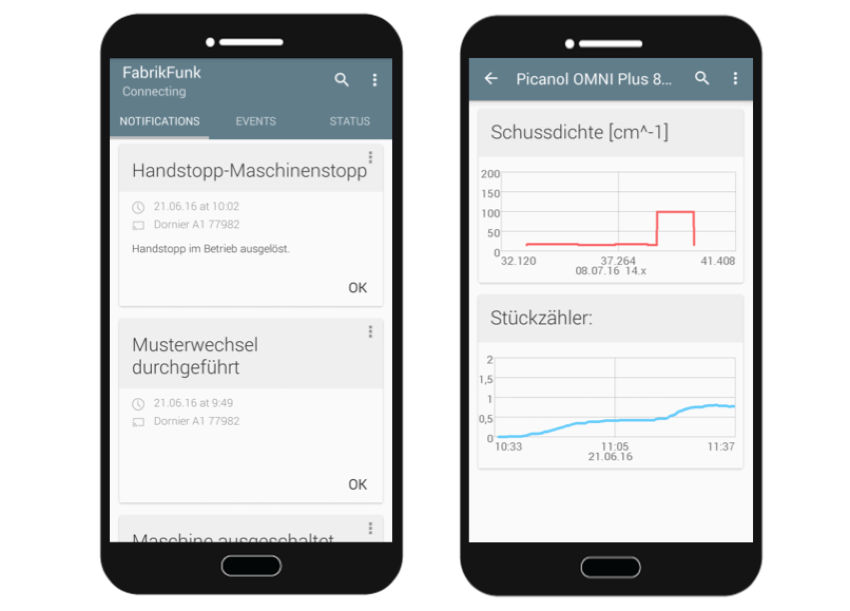
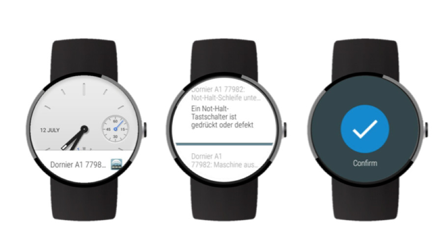

Hi, I'm Julian,
an engineer
& technology enthusiast.
Feel free to drop me a message at hi(at)julianvossen.de
Below, you can find some things I spend my time on...
Bachelor thesis @ E.ON Energy Research Center Aachen
The goal is to improve the quality of electric load forecasts on a household level. As forecasting on the level of a single household is an ill-posed problem, state-of-the-art single-point forecasting methods cannot provide reliable predictions.
Therefore, we are developing a method to predict probability density over time using artificial neural networks.
Work in progress...

Engineering project @ Institut für Textiltechnik Aachen
Assisting machine operators in complex and highly automated production environments, we built a proactive information distribution system for industry 4.0 weaving mills. The system monitors weaving machines and delivers notifications on relevant machine events in real-time to mobile devices carried by the machine operators.

All connected weaving machines are represented by individual agents running on a Raspi. The agents communicate to the machines via TCP/IP.

An agent analyzes all machine data and determines which events are relevant to which operator in order to distribute them accordingly.

Operators receive notifications on smartphones and smart watches and become more effective at monitoring numerous machines at once.
Handelsblatt, 3M, Google News Lab Hackathon
We built a tool that generates cartoon-style GIFs from news articles automatically. First, it extracts named entities, then it finds matching images for persons and locations from a labeled database. It then cuts out the people's heads and assembles a cartoon-style collage from it. In the end, we won the Google News Lab prize.
Deutsche Bank Hackathon
We developed a virtual tax assistant. Using the Deutsche Bank API, it scans the user's bank account for possible tax-relevant transactions. The user interface is a dialog system based on Facebook's Wit.ai serving the purpose of answering user questions and completing the data required for the tax report.
Continuo Habit Tracker
Continuo is an app that helps to stick with good routines. It is simple enough to actually keep using it for a long time. It was my first little app to get started with Android development.
Formula Student
Formula Student is a worldwide engineering competition where students develop and build formula race cars with about 100 bhp and vehicle mass of roughly 200 kg, resulting in 0 to 100 km/h in under 4 seconds. I was part of the RWTH Aachen team for two years where I became in charge of the mechanical drivetrain.
From MathWorks Blog:
"[...] About MATLAB & Simulink, Julian says: “It was great to have a tool in which you can simulate transients. We can see for every second in the race temperature and other parameters.” In Simscape, the first principles add-on for physical modeling, he chooses the cooler size and pump size that exactly fit the needs of his system. The result? Their car survived the most challenging race: the endurance test, where you have to keep the car running for 22 km. They even made a pretty good lap time and ranking, which takes into account the energy consumption. [...]"
Making electronic music
Just for the fun of it really, as I feel like I don't spend enough time in front of my computer already...